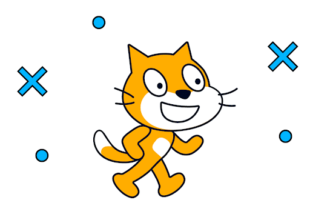

🔗 Работаем в Scratch
Перейдите на официальный сайт Scratch, чтобы начать создавать проекты:
Перейти на сайт Scratch🎮 Урок 1: Простая анимация
Создайте спрайта, который будет говорить и двигаться. Используйте блоки из разделов «Движение» и «Внешний вид».
Совет: Можно добавить звук и переключать костюмы.
🎮 Урок 2: Кот Scratch

Оживим робота при помощи Scratch и изучим новые блоки
Совет: Для этого урока обязателен конструктор